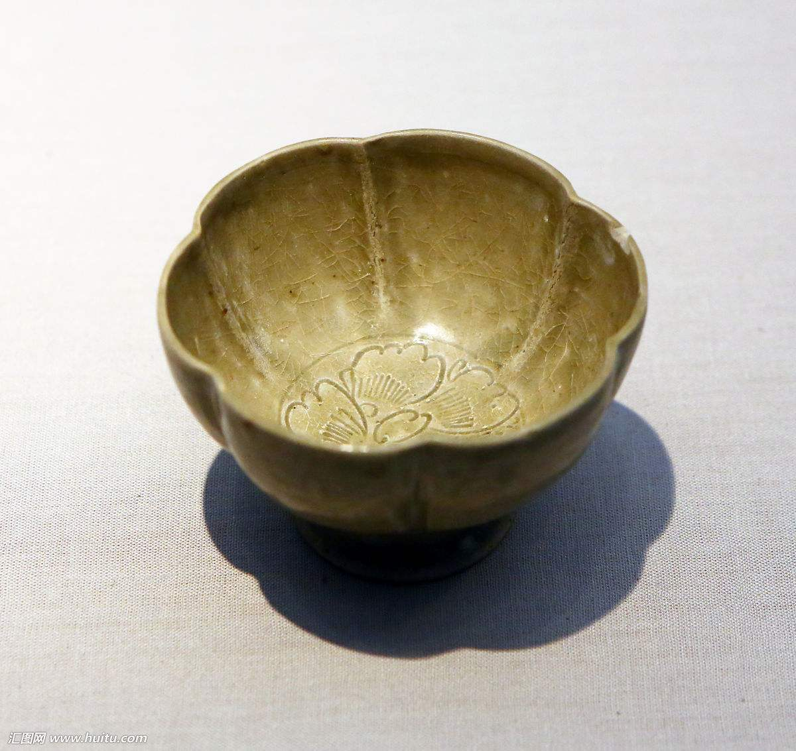
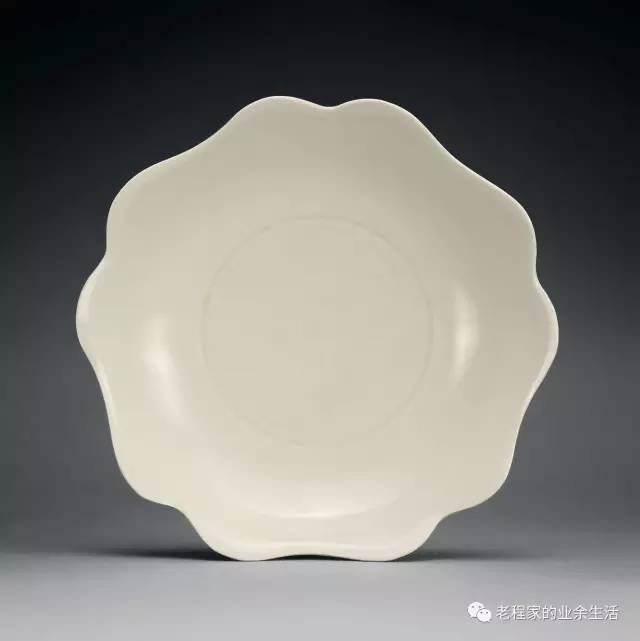
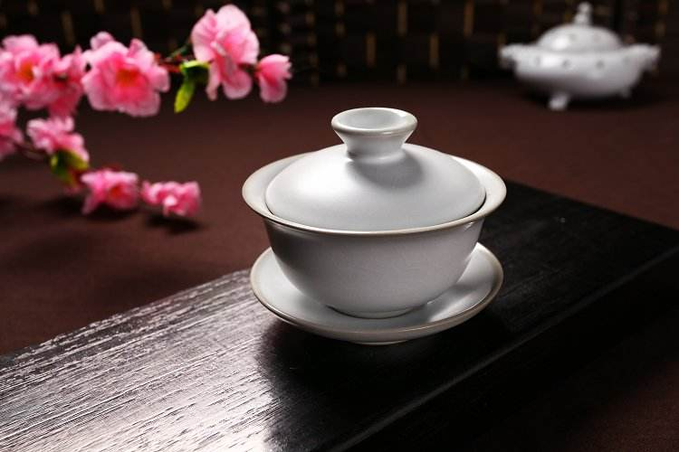
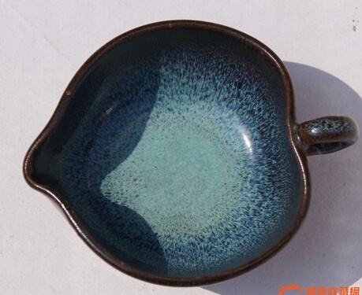
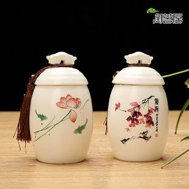
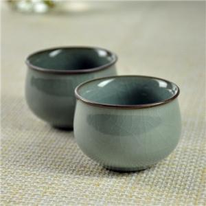

越窑
该名称最早见于唐人陆龟蒙的《秘色越器》一诗，系对杭州湾南岸古越地青瓷窑场的总称。 其形成于汉代，经三国、西晋，至晚唐五代达到全盛期，至北宋中叶衰落。中心产地位于上 虞曹娥江中游地区，始终以生产青瓷为主，质量上乘。陆羽《茶经·四之器》中评述茶碗的质 量时写道："若邢瓷类银，越瓷类玉，邢不如越也；邢瓷类雪，则越瓷类冰，邢不如越二也； 邢瓷白而茶色丹，越瓷青而茶色绿，邢不如越三也。"陆羽煮饮绿茶，故极推崇越瓷。

邢窑
在今河北内丘、临城一带，唐代属邢州，该窑始于隋代，盛于唐代，主产白瓷， 质地细腻，釉色洁白，曾被纳为御用瓷器，一时与越窑青瓷齐名，世称"南青北 白"。陆羽在《茶经》中认为邢不如越，主要因为他饮用蒸青饼茶，若改用红花 比较，或要反映真实的茶汤色泽，则结果正好相反，所以两者各有所长，关键在 于与茶性是否相配。

汝窑
宋代五大名窑之一，在今河南宝丰清凉寺一带，因北宋属汝州而得名。 北宋晚期为宫廷烧制青瓷，是古代第一个官窑，又称北宋官窑。釉色以 天青为主，用石灰一碱釉烧制技术，釉面多开片，胎呈灰黑色，胎骨较薄。

钧窑
宋代五大名窑之一。在今河南许昌神垕镇，此地唐宋时为钧州所辖而得名。 始于唐代，盛于北宋，至元代衰落。以烧制铜红釉为主，还大量生产天蓝、 月白等乳浊釉瓷器，至今仍生产各种艺术瓷器。

定窑
宋代五大名窑之一。在今河北曲阳润磁村和燕山村，因唐宋时属定州而得名。 唐代已烧制白瓷，五代有较大发展，白瓷釉层略显绿色，流釉如泪痕。北宋 后期创覆烧法，碗盘器物口沿无釉，称为"芒口"。五代、北宋时期承烧部分 宫廷用瓷，器物底部有"官"、"新官"铭文。宋代除烧白瓷外，还烧黑釉、酱 釉和绿釉等品种。

南宋官窑
宋代五大名窑之一，宋室南迁后设立的专烧宫廷用瓷的窑场。前期设在龙泉 （今浙江龙泉大窑、金村、溪口一带），后期设在临安郊坛下（今浙江杭州 南郊乌龟山麓）。两窑烧制的器物胎、釉特征非常一致，难分彼此，均为薄 胎，呈黑、灰等色；釉层丰厚，有粉青、米黄、青灰等色；釉面开片，器物 口沿和底足露胎，有"紫口铁足"之称。16世纪末，龙泉青瓷在法国市场上出 现，轰动整个法兰西，由于一时找不到合适的语言称呼它，只得用欧洲名剧 《牧羊女》中女主角雪拉同所披的青色长袍来比喻，于是"雪拉同"成为青瓷的 代名词。龙泉窑又有新的发展。杭州南宋官窑遗址建立了南宋官窑博物馆。